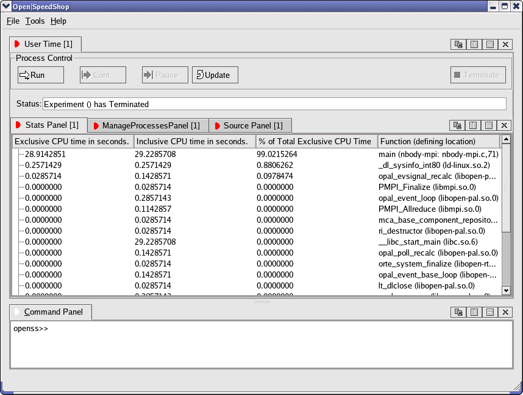

Using Open|SpeedShop™
Within a terminal window, enter openss -cli and hit <Enter>. This will start Open|SpeedShop's interactive command line interface. In this particular example, we are going to gather user time information from an MPI job (Note: We are going to simulate an MPI run by oversubscribing our processor). For demonstration purposes, we are going to gather information from one of Open|SpeedShop's supported implementations of the message passing interface - Open MPI. We have provided test binaries that can be utilized for our purposes. Note: If you experience difficulties, please try running the provided reset-live.sh script (~/reset-live.sh).
Within the interactive CLI, enter expcreate -f "mpirun -np 3 nbody-mpi" usertime. (Note: In this particular case, the double quotes are required). We should then be greeted with a new focused experiment identifier. Enter expgo to start the focused experiment.

Once the experiment has terminated, we can view the collected data through the CLI by entering expdata, or we can open the GUI by entering openGui. Another test binary is located in /usr/bin and is supplied for further exploration. It is: mm-mpi.
Please also explore the various options offered via a panel's pull down menu. Further options can be accessed by clicking on a colored downward-facing arrow. 